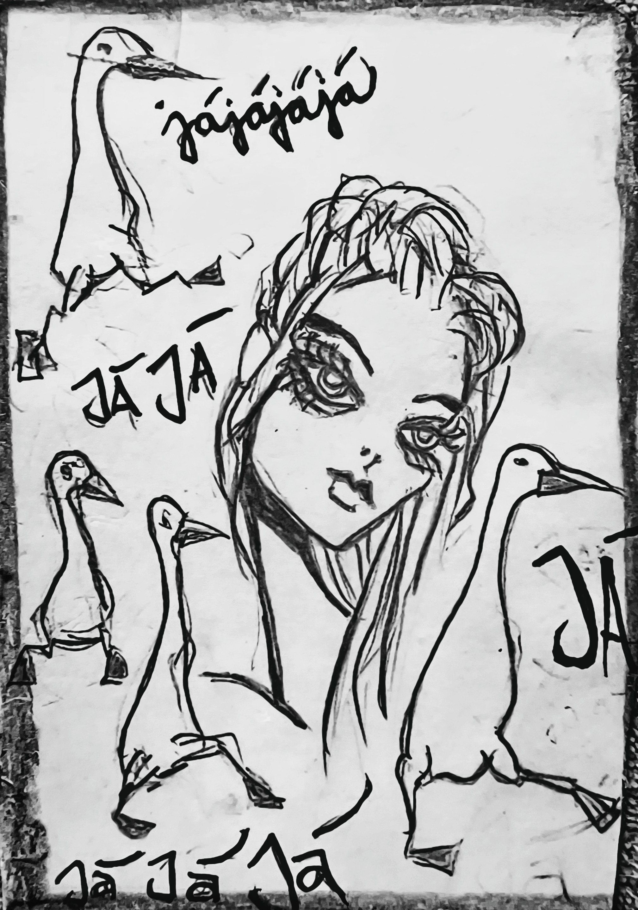

Zapsáno rukou, která nechtěla nic vysvětlit.
O HUSÁCH
které mluvily „já ja jajaja jaja ja“
—
Na severu, kde se slova lámou o vítr a příběhy se rodí z mlhy, žilo jedno hejno hus. Velkých. Bílých. Obyčejných. Aspoň podle svého mínění. A mínění, těch měly zásoby bez dna. A to si tyhlety konkrétní husy kompenzovaly tím, že dělaly slovní nosičky. Jenže..
—
Každá z nich nesla jedno „já“. A žádný z těch všech „já“ si nebylo jisté, jestli je opravdu „já“, nebo jen ozvěna jiného „já“. A tak husy nelétaly v klínu. Létaly v kruhu. A křičely: „Já ja jajaja jaja ja!“
—
Ti, kdo je slyšely, z nich byli polopopletení. Jedni si mysleli, že je to zpěv. Druzí, že je to porucha. Ale ve skutečnosti to byl – manifest identity v rozkladu.
—
Jedna husa, jmenovala se asi Já, možná JáJá, se jednou zastavila a řekla: „Já jsem já, ale jen když ja slyšíš. Když ja neslyšíš, jsem jen jaja. A když mě slyšíš moc, jsem jajaja. A když mě slyšíš pořád, jsem jaja ja. A pak už nevím, kdo jsem.“
—
Ostatní husy přikyvovaly krky jako v opravdové panice. „Já ja jajaja jaja ja!“ To nebyl výkřik. To byla gramatická krize.
—
Jednou přiletěl houser. Unavený, potrhaný, s kufrem plným zájmu. Zeptal se: „Kdo jste?“ A husy odpověděly: „Já.“ „Já.“ „Já.“ „Já.“ „Já.“ „Já.“ „Já ja jajaja jaja ja.“
—
Houser se zasmál. „Aha. Kolektivní singulár. To znám.“ Víc nic nedodal. A odletěl. A neřekl kam.
—
Od té doby se říká, že když někdo opakuje „já“ tak dlouho, až to zní jako „jajaja“, možná nehledá pozornost. Možná hledá bílé husy. Možná jejich já neslyšel.
—
Husy totiž nejsou hloupé. Jsou jen hlasité pokusy o sebe-klam.